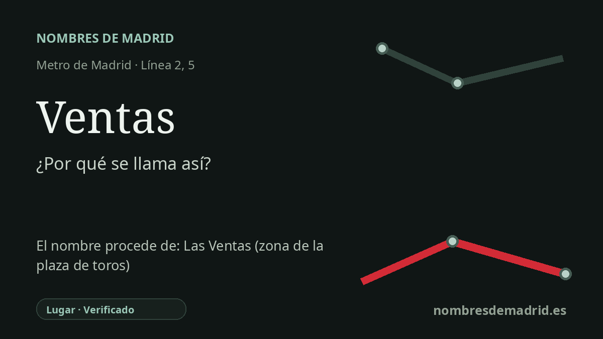

Publicado el · Investigación de Nombres de Madrid · Cómo verificamos cada origen · 8 fuentes consultadas
Respuesta rápida
Ventas toma su nombre de la antigua zona de Las Ventas del Espíritu Santo, un paraje de ventas, merenderos y posadas junto al arroyo Abroñigal en la salida de Madrid. La plaza de toros hizo que esa forma abreviada quedara fijada en la memoria urbana.
La historia del nombre
La estación de Ventas toma su nombre del antiguo borde oriental de Madrid conocido como Las Ventas, de forma más completa Las Ventas del Espíritu Santo. La palabra venta no alude aquí a la venta comercial moderna, sino a una posada o parada de camino para viajeros. La estación abrió en la línea 2 en 1924 junto a la calle de Alcalá, en un punto que ya estaba identificado con ese topónimo histórico.
El nombre antiguo pertenecía al entorno del arroyo Abroñigal, cerca del actual Puente de Ventas y de la M-30. Allí se encontraban las salidas de Madrid hacia Alcalá de Henares, Aragón y Vicálvaro, de modo que era un lugar natural de parada para viajeros, arrieros, carros y, más tarde, excursionistas. Diversas investigaciones históricas señalan la Venta del Espíritu Santo como un establecimiento importante desde el siglo XVII, al que después se sumaron otras ventas, casas de comidas y espacios de ocio popular.
A finales del siglo XIX y comienzos del XX, Las Ventas del Espíritu Santo era un paisaje reconocible de periferia: cruce de caminos, zona de recreo popular y borde urbano poco ordenado. La forma abreviada Las Ventas sobrevivió como nombre del barrio, mientras que Espíritu Santo quedó asociado a la memoria religiosa cercana y a la parroquia posterior. Por eso el nombre de la estación es una etiqueta de transporte aplicada a un topónimo previo, no una denominación creada por Metro desde cero.
La plaza de toros sigue siendo esencial para la identidad actual de la estación. La Comunidad de Madrid recuerda que la estación de 1924 tenía incluso un acceso previsto para el gran número de viajeros esperado en días de corrida por su cercanía a la Monumental. La Plaza de Toros de Las Ventas fue proyectada en estilo neomudéjar por José Espeliú; tras su muerte, Manuel Muñoz Monasterio terminó las obras, concluidas en 1931. Hubo una corrida benéfica inaugural en 1931, aunque varias historias oficiales distinguen una inauguración oficial posterior en 1934, una vez resueltos problemas del entorno urbano.
El origen mejor documentado es, por tanto, el topónimo Las Ventas del Espíritu Santo, abreviado en Ventas. La plaza de toros no originó el nombre, porque la estación y el topónimo son anteriores a su funcionamiento normal; más bien lo amplificó y lo fijó en la memoria colectiva. La principal cautela pendiente es que varias fuentes accesibles citan el Archivo de Villa para la documentación temprana de la Venta del Espíritu Santo, pero convendría revisar directamente el expediente archivístico para cerrar la cadena documental.